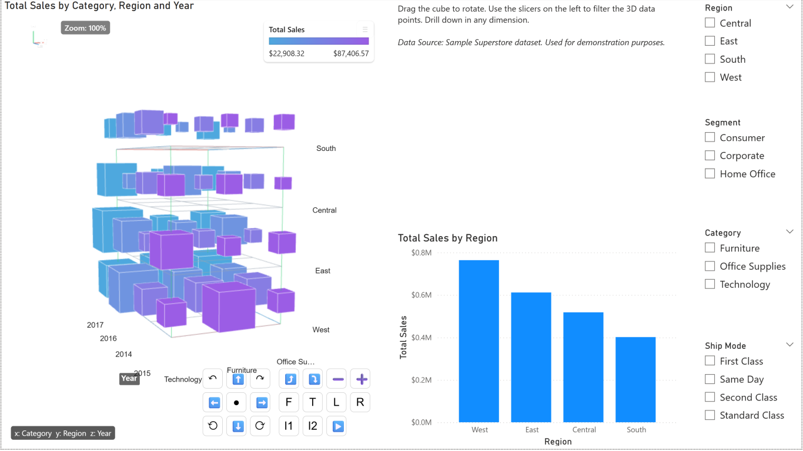

Chartered Accountant, FinTech Professional, and Educator sharing open-source custom visuals and animated infographics to demystify complex Power BI concepts.
Explore my open-source custom visuals designed to extend Power BI's capabilities.

An interactive, open-source 3D visual for Power BI that helps users visualize multidimensional data. Explore Data Cube operations—Pivoting, Dicing, Slicing, Drilling Down, and Rolling up—through dynamic 3D cube animations.
Explore exercises and mind maps to master data transformation with Power Query.
Practice data shaping and transformation with a set of Power Query exercises along with sample data in Excel.
A comprehensive mind map detailing Time Intelligence functions and concepts in Power BI.
A collection of interactive, animated infographics designed to demystify complex concepts and make them easy to learn.
An interactive infographic that visually demonstrates OLTP vs OLAP: at a Glance and why Columnstore databases are used in analytics.
View Infographic →An interactive infographic that visually demonstrates OLAP data cube operations—Pivoting, Dicing, Slicing, Drilling Down, and Rolling up—through dynamic 3D cube animations linked with tabular data.
View Infographic →This visual demonstrates how filters cascade from dimension tables to the central fact table, including bidirectional relationships.
View Infographic →An interactive model that explains the DAX filter context hierarchy and how CALCULATE() can modify the flow of filters.
View Infographic →See the SUM measure act like a camera while report, page, visual, and slicer filters choreograph who steps into the spotlight.
Open the Camera Page →Learn the foundational difference between “current row” and “visible rows” before moving on to context transition.
Open the Foundation Page →See row context become filter context through a commission example that compares a plain SUM with CALCULATE-wrapped evaluation.
Open the Context Transition Lab →Explore how DAX date intelligence functions stay on track using a train yard animation that demonstrates current, previous, and next period calculations.
View Animation →Step through the iterative stages of data analysis with illustrated diagrams that connect business questions to measurable insights.
Explore the Stages →Browse chart types, learn when to use them, and generate animated ECharts previews for Power BI storytelling.
Open the Chart Guide →Experiment with Left/Right/Full, Inner, and Anti joins using Orders, Customers, and Products linked with live Venn diagrams.
Explore Joins →Hands-on case studies and real-world scenarios to elevate your Power BI data modeling and analytics skills.
A comprehensive data analysis case study covering modeling, DAX, and report creation.
An advanced case study focusing on complex scenarios and in-depth data transformation.
A focused case study applying analytics to real-world purchasing data records.
Practical real-world examples reconciling and analyzing Form 26AS tax statements.
Download the source data required to complete the exercises in Power BI Case Studies 1 & 2.
Download the companion Power BI workbook to experiment with the scenarios covered in these visuals.
Download PBI.xlsx ↓